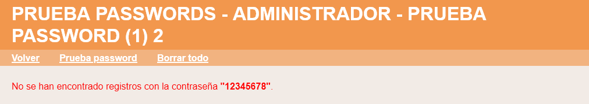

En este ejercicio se debe ampliar la aplicación proporcionada en la plantilla de manera que:
El administrador pueda probar las contraseñas de los usuarios registrados.
Al crear un nuevo usuario se compruebe que la contraseña no se encuentra en una lista de valores configurable por el administrador.
La aplicación debe funcionar tanto en SQLite como en MySQL. Haga una captura de la pantalla en phpMyAdmin en la que se vea la base de datos de la aplicación y el contenido de la tabla de usuarios.
Prueba passwords - Comentarios
Menú administrador
El menú Administrador contiene una opción "Prueba password":
Prueba passwords
Al elegir esta opción se mostrará un fomrulario con una caja de texto para escribir una contraseña:
Si la contraseña a probar es demasiado larga, se mostrará el aviso correspondiente:
Si no se encuentran registros con la contraseña indicada, se mostrará el aviso correspondiente:

Si se encuentran registros con la contraseña indicada, se mostrará el listado correspondiente:
Insertar registros de usuario
El administrador de la aplicación definirá una matriz formada por cadenas de texto (que corresponden a contraseñas débiles, como 1234, admin, pezespada, etc.).
Al crear un nuevo registro de usuario, se añadirá una comprobación que compruebe si la contraseña indicada por el usuario se considera débil: